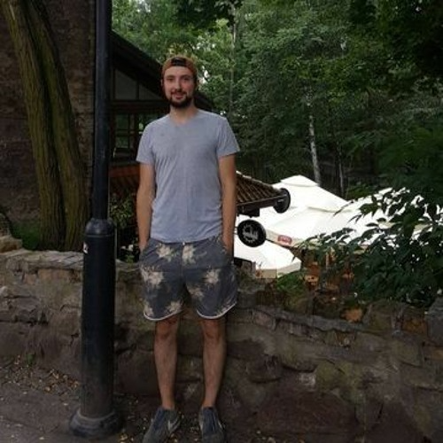
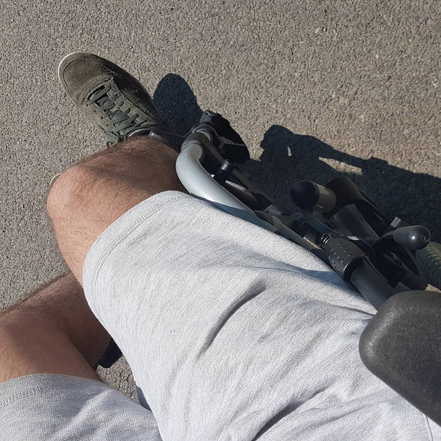
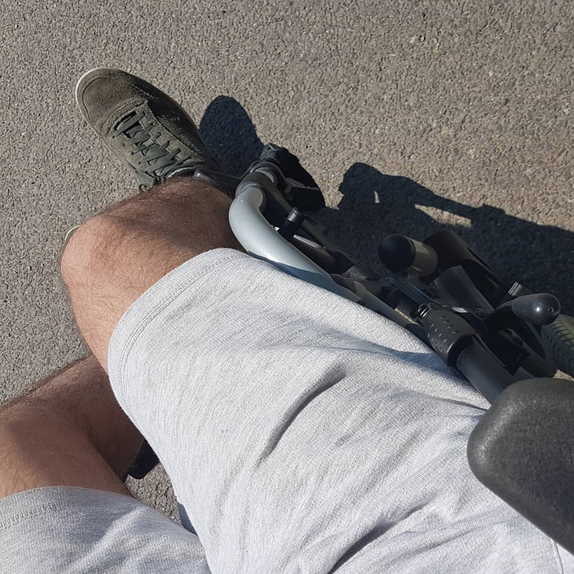

bio

This is me, in my best years being on vacation in Poland and before I got diagnosed with paranoid schizophrenia. Back then I was in my mid-20ies, the last time feeling as a normal social human being.
Born in Beckum, a small town in Northrhine Westphalia in Germany, I grew up as a polish-german child in the 90ies with two little sisters, a gameboy and a playstation. I was a quite shy child, so my friends where quite manageable. Soon, in my teeny time, the first computer arrived, but I also made new friends and spent a great time playing soccer with friends or skating. Our family got a dog, which really helped me through bad years of school. I had a great time with many people when I finished school, and an even greater time when I moved to Koblenz for my study in computer science.
Unfortunately, strange things started to happen, and they only got more after my bachelor thesis. Feeling stalked by strangers, even being harassed by them in most banal situations, to a point, where they even shouted at me at night. Some people obviously didn't like me there. It was like psychoterror. After spending a lot of great time in that beautiful city between rhine and the mosel, the city finally became a nightmare. The situation was so stressing that I was forced to move back to my hometown.
Back in Beckum, I was just explaining to my family that I didn't feel very great so I had to stay for a while. But I didn't really talk to anyone about what happened in the last few years because I always ignored the bad stuff and focussed on good moments. But these good moments were gone as soon as I moved back, although I keep them in my memory until today. In Beckum, the strangers couldn't really reach me anymore, so there was less happening outside. But that didn't really give me my inner peace back. Under stress, my mind became more and more focussed on all the bad stuff happening in the world, without having a break. Isolated from all the people I used to know, I began to draw the images (of this art project), it felt like a sudden relevation to me.
Month after month I drew different symbols on paper, and they fed my already sick mind to an extent that I spilled out even more of those symbols. I began to live in my own world, strange thoughts appeared that every normal human being would filter out instantly. But I let all of these strange thoughts happen, I watched them like a movie, until the movie became so intense that I started to feel the strangers that once threatened me outside, finally threatening me in my own mind. First they appeared as thoughts that were not my own, I didn't identify with them. Then, when everything got really mad, I started to hear their voices in my ear, I even felt them doing stuff in my body.
 From there on, it did only take a few days and I was completely sleep deprived, going completely insane. I felt like these strangers wanted to get me out of my house. And they kind of did in the end. One morning, I couldn't breath anymore. It felt different than a panic attack. Something in my body felt being blocked so I got no oxygen anymore, I was cramped, and in that short moment of not being able to control my body anymore I decided: Ok, I don't want to die by suffocating. I made my way out of my room to the balkony, and climbed over the grille. I sat down and was ready to fall, if the cramps got back again. And they did. The last thing I saw was the sunrise. Then I lost my consciousness and fell from the balkony. Luckily, it was only the first floor, only a few meters. But it was enough to break my hips.
I woke up in the intensive care unit, still much paranoid about my whole situation. I begged the nurse to not inject stuff into infusion tube, and I thought my whole family was dead, glad he gave me the tranquilizers anyway. I kept sleeping more, and the next time I woke up, I wasn't panicking anymore. I spent a few weeks in that hospital without moving out of bed, and finally, when I got a wheelchair and the doctors told me, that I could go back home, I was very happy for the first time after all this misery. But the luck didn't last long, on the same day I had to move to the psychatry because I got confined. There, I had to stay for a few months to get my medication. But even after medication, there was one guy in that station that herassed me again. Not just a random herassment. I knew it directly that he was one of these people who have been stalking me. So no, my paranoid situation didn't get really better, but at least the heavy symptoms of schizophrenia aren't there anymore.
I am back home now for a few years (2023), and I am doing better. But I am pretty much socially destroyed, and of course mentally. But I am trying to at least keep my mental health upright, because that's what you need to have a proper life. But since then, I avoid people as much as possible, I don't go out very often, it's like living in a prison. You live, but you don't really... Even after prison you have the chance to get your normal life back, but I am not very optimistic when it comes to my illness. The paranoia is so deeply rooted in my mind that I don't know how to live a fully carefree life again. At least I am trying to keep myself active, that's why I decided to create this page and share my art and story with you. Of course that is only possible because I am already doing better, at the time of my psychosis I was very secretive, but I keep opening up a little bit more as time passes.
Born in Beckum, a small town in Northrhine Westphalia in Germany, I grew up as a polish-german child in the 90ies with two little sisters, a gameboy and a playstation. I was a quite shy child, so my friends where quite manageable. Soon, in my teeny time, the first computer arrived, but I also made new friends and spent a great time playing soccer with friends or skating. Our family got a dog, which really helped me through bad years of school. I had a great time with many people when I finished school, and an even greater time when I moved to Koblenz for my study in computer science.
Unfortunately, strange things started to happen, and they only got more after my bachelor thesis. Feeling stalked by strangers, even being harassed by them in most banal situations, to a point, where they even shouted at me at night. Some people obviously didn't like me there. It was like psychoterror. After spending a lot of great time in that beautiful city between rhine and the mosel, the city finally became a nightmare. The situation was so stressing that I was forced to move back to my hometown.
Back in Beckum, I was just explaining to my family that I didn't feel very great so I had to stay for a while. But I didn't really talk to anyone about what happened in the last few years because I always ignored the bad stuff and focussed on good moments. But these good moments were gone as soon as I moved back, although I keep them in my memory until today. In Beckum, the strangers couldn't really reach me anymore, so there was less happening outside. But that didn't really give me my inner peace back. Under stress, my mind became more and more focussed on all the bad stuff happening in the world, without having a break. Isolated from all the people I used to know, I began to draw the images (of this art project), it felt like a sudden relevation to me.
Month after month I drew different symbols on paper, and they fed my already sick mind to an extent that I spilled out even more of those symbols. I began to live in my own world, strange thoughts appeared that every normal human being would filter out instantly. But I let all of these strange thoughts happen, I watched them like a movie, until the movie became so intense that I started to feel the strangers that once threatened me outside, finally threatening me in my own mind. First they appeared as thoughts that were not my own, I didn't identify with them. Then, when everything got really mad, I started to hear their voices in my ear, I even felt them doing stuff in my body.
 From there on, it did only take a few days and I was completely sleep deprived, going completely insane. I felt like these strangers wanted to get me out of my house. And they kind of did in the end. One morning, I couldn't breath anymore. It felt different than a panic attack. Something in my body felt being blocked so I got no oxygen anymore, I was cramped, and in that short moment of not being able to control my body anymore I decided: Ok, I don't want to die by suffocating. I made my way out of my room to the balkony, and climbed over the grille. I sat down and was ready to fall, if the cramps got back again. And they did. The last thing I saw was the sunrise. Then I lost my consciousness and fell from the balkony. Luckily, it was only the first floor, only a few meters. But it was enough to break my hips.
I woke up in the intensive care unit, still much paranoid about my whole situation. I begged the nurse to not inject stuff into infusion tube, and I thought my whole family was dead, glad he gave me the tranquilizers anyway. I kept sleeping more, and the next time I woke up, I wasn't panicking anymore. I spent a few weeks in that hospital without moving out of bed, and finally, when I got a wheelchair and the doctors told me, that I could go back home, I was very happy for the first time after all this misery. But the luck didn't last long, on the same day I had to move to the psychatry because I got confined. There, I had to stay for a few months to get my medication. But even after medication, there was one guy in that station that herassed me again. Not just a random herassment. I knew it directly that he was one of these people who have been stalking me. So no, my paranoid situation didn't get really better, but at least the heavy symptoms of schizophrenia aren't there anymore.
I am back home now for a few years (2023), and I am doing better. But I am pretty much socially destroyed, and of course mentally. But I am trying to at least keep my mental health upright, because that's what you need to have a proper life. But since then, I avoid people as much as possible, I don't go out very often, it's like living in a prison. You live, but you don't really... Even after prison you have the chance to get your normal life back, but I am not very optimistic when it comes to my illness. The paranoia is so deeply rooted in my mind that I don't know how to live a fully carefree life again. At least I am trying to keep myself active, that's why I decided to create this page and share my art and story with you. Of course that is only possible because I am already doing better, at the time of my psychosis I was very secretive, but I keep opening up a little bit more as time passes.